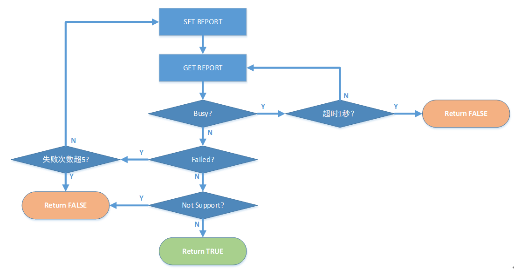

5.上位机 Protocol
EndPoint 定义与描述
| NO | EndPoint | Type | Comment |
|---|---|---|---|
| 1 | EP0 | Control,IN/OUT | USB Vendor Command |
| 2 | EP1 | Interrupt,IN | Mouse & Consume Key |
| 3 | EP2 | Interrupt,IN | Keyboard |
| 4 | EP3 | Interrupt,IN/OUT | Read/Write: Button Function, LED RGB, Profile, Macro, Update F/W |
Report Data Structure
| Byte \ Bit | 7 | 6 | 5 | 4 | 3 | 2 | 1 | 0 |
|---|---|---|---|---|---|---|---|---|
| 0 | Reprot ID ( Reserved ) | |||||||
| 1 | CMD Status：0x00 ( Sucess ) ; 0x01 ( Busy ) ; 0x02 ( Failed ) ; 0x03 ( Not Support ) | |||||||
| 2 | CMD ID ( 命令 ID )：见无线适配器和双模游戏鼠标主控具体命令协议 | |||||||
| 3 | Data_Index ( 数据索引 LSB ): 命令的数据超过 57 Bytes 时，需要多次传输时的数据索引递减值。例如要传输 200 Bytes，则需要分 4 次传输，索引值依次为 3、2、1、0。0 表示最后一组数据 | |||||||
| 4 | Data_Index ( 数据索引 MSB ) | |||||||
| 5 | Data_Length ( 数据长度 ): 0~57 Bytes | |||||||
| 6 | Data 0 | |||||||
| 7 | Data 1 | |||||||
| ...... | Data ... | |||||||
| 63 | CheckSum: CheckSum = 55h - ( Byte0 + ... + Byte62 ) & 0xFF | |||||||
CMD FLOW ( 命令流程 )
